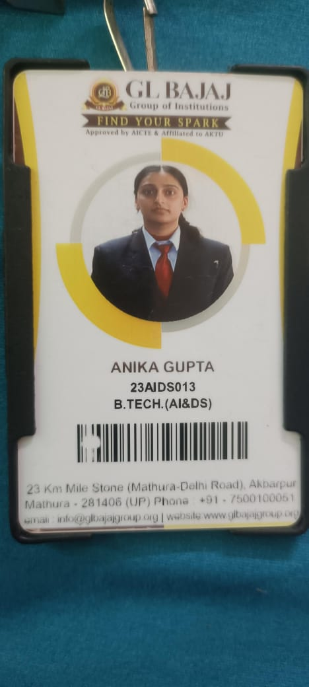

ceo

founder

developer
5

A cab booking service designed exclusively for women. At WE-Stree, safety, convenience, and comfort are at the heart of everything we do. Our mission is to empower women by providing a secure and reliable transportation experience tailored to meet their unique needs. What sets us apart? Geofencing Alerts: Receive instant alerts when entering or leaving predefined zones, ensuring constant awareness of your location. Emergency Voice Messages: With just a tap, send pre-recorded messages to your emergency contacts during critical situations. Security Concierge Service: Our dedicated team is always on standby to assist you and monitor your journey in real time. Pre-Set Safe Destinations: Easily select from a list of verified safe places for stress-free travel. Built-In Cameras: Every ride is equipped with cameras to ensure your safety and peace of mind. Whether you're commuting to work, running errands, or heading out for an evening, [Your Brand Name] is here to redefine the way women travel. We prioritize your safety and strive to make every journey a secure, seamless, and empowering experience. Travel confidently with us—because your safety is our priority.

When a user enters an unsafe area or a high-crime zone, the app can send an alert to both the user and their emergency contacts, offering a chance to quickly adjust routes or take additional safety measures
Allow passengers to set up a few pre-recorded messages (e.g., "I’m in danger, send help!") that can be sent out quickly in an emergency without the need to type or speak.
A “security concierge” that users can chat with directly in the app, offering real-time assistance if they feel uncomfortable or unsure, including guidance on how to handle suspicious situations during the ride.
Allow users to set predefined “safe places” or “safe zones,” like local police stations, hospitals, or public spots, and use these as destinations for emergencies or when they need to change routes quickly
Using voice recognition or subtle changes in user interaction (such as frantic typing or changes in language), the app can detect signs of distress and automatically offer safety options or alert contacts.

In case the ride is unavailable, there could be an in-app feature that coordinates with local taxis, public transport, or other safety services in the area for a quick backup ride.